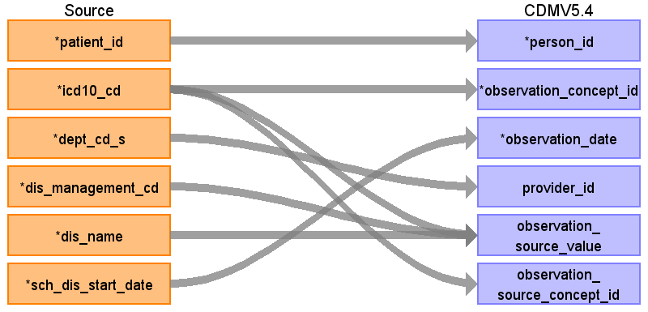

ターゲットテーブル:observation
・当テーブルは PatientDisease、ObservationResult、PrescriptionData、InjectionData からデータが登録される。
・各テーブルの 病名、検査値、薬剤名などを ATHENA Vocabularyを介したstandard conceptへの変換後、standard conceptのdomainが "Observation" で定義されているデータが格納される。
（注：本データソース側には「所見」や「経過観察」などを格納しているエンティティが存在しない。このため、各施設で発生したすべての Observation（観察）が登録されるわけではない。）
本項では、PasientDiseaseをもとに生成された、observationテーブルの各項目のとの出力結果の対応を記載する。
例：「ICD10 / H17:角膜瘢痕及び混濁の細分類」 → 「OMOP コンセプト ID （SNOMED）/ 4109135: Corneal scars and opacities」

| Destination Field | Source field | Logic | Comment field |
|---|---|---|---|
| observation_id | 一意の連番を設定する | ||
| person_id | patient_id | person.person_source_valueと結合してperson_idを取得・登録する |
|
| observation_concept_id | icd10_cd | Source_to_concept_map:
VocabID:RINCHU_DIAGCD, ATHENA_ICD10 DomainID:Observation |
ICD-10コードをsource_to_concept_mapを介してSNOMED他のStandard Vocabularyに変換する
|
| observation_date | sch_dis_start_date | ||
| observation_datetime | （設定しない） | ||
| observation_type_concept_id | 32817（EHR）固定とする | ||
| value_as_number | （設定しない） | ||
| value_as_string | （設定しない） | ||
| value_as_concept_id | （設定しない） | ||
| qualifier_concept_id | （設定しない） | ||
| unit_concept_id | （設定しない） | ||
| provider_id | dept_cd_s | 当該標準診療科コードを示すprovider_idを取得して登録する |
|
| visit_occurrence_id | （設定しない） | ||
| visit_detail_id | （設定しない） | ||
| observation_source_value | dis_management_cd icd10_cd dis_name |
COALESCE(icd10_cd, '') || '|' || COALESCE(dis_management_cd, '') || '|' || COALESCE(dis_name, '') |
ICD10コード|病名管理番号|病名表記の形式に編集して判読可能な値として登録する
|
| observation_source_concept_id | icd10_cd | Source_to_concept_map:
VocabID:RINCHU_DIAGCD, ATHENA_ICD10 DomainID:Observation |
ICD10コードをAthenaのconceptを介してconcept_idに変換する |
| unit_source_value | （設定しない） | ||
| qualifier_source_value | （設定しない） | ||
| value_source_value | （設定しない） | ||
| observation_event_id | |||
| obs_event_field_concept_id |